3Wine was a subscription-based wine e-commerce.
It was late 2012 when I was contacted by 3Wine. The subscription-based e-commerce space was booming at the time; new startups were sprouting everyday, selling the most diverse kinds of goods.
3Wine’s ambition was to become a relevant player in the wine & food vertical, and the team’s Italian roots – they were based in Verona, a North-Eastern city which is well-known for its wines – was probably the best starting point.
When I was hired there weren’t any prototypes or beta versions of the product: a great opportunity for creating everything from scratch, from identity to user interface.
Logo Design & identity
Logo, final version
My work on the logo started with 4 proposals — 3 of which are documented here — that led to a selected version.
That version was refined and improved through several iterations, which ultimately led to the final version. No detail was left untouched until the logo felt complete, solid and balanced.
Once the final version was approved, 4 different color palettes were explored, all inspired by the colors of wine, soil, and vine leaves.
Logo iterations
Ribbon study
Circle study
Rejected logos
Colors & typography
-
#a0b63b
-
#e4dcca
-
#4e6b75
-
#7a655b
- 
UI Design
As the primary touchpoint for 3Wine's customers, the website was the main platform for buying the product.
The client provided a series of sketches outlining requirements and functionalities, and I began my design work from there. I chose a simple and clean style, with white backgrounds and soft, washed-out colors. By contrast, call to actions were signaled in bright green. The logo's vintage vibe was echoed in many little UI details and embellishments.
I worked with typography to give the UI a distinctive look: particularly, I used the retro sans-serif "Hammersmith One" for the navbar, an unconventional choice for a main navigation; then I chose a gentler serif, Coustard, for the headings and finally the light yet easily readable Varela Round for body text.
▲ "Monthly Selection" was the core of the website's experience: every month it displayed a different curation of wines, paired with delicious recipes.
The goal of this page was to communicate to the user, at a glance, the value of a 3Wine subscription: a monthly selection of the best wines and recipes, delivered in an elegant box directly at your doorstep.
The arrow buttons on the top left/right offered to the logged-in user a convenient way to browse the content of each box present and past, like a personal collection.
Photography played a major role here, so two dedicated photographers were hired: the first focused on food photography, and the second specialized in product photography for the wine industry.
Website icons
▲ I designed a simple set of UI glyphs; I don't use templates, so each part of the app's visual language is my original creation.
In addition to that, the last touch was designing a complete UI Sheet, in order to establish clear and measurable UI guidelines for front-end developers: the document lists all the website's visual elements & styles, and defines in detail how they should look like.

"When I was hired there weren’t any prototypes or beta versions of the product: a great opportunity for creating everything from scratch"